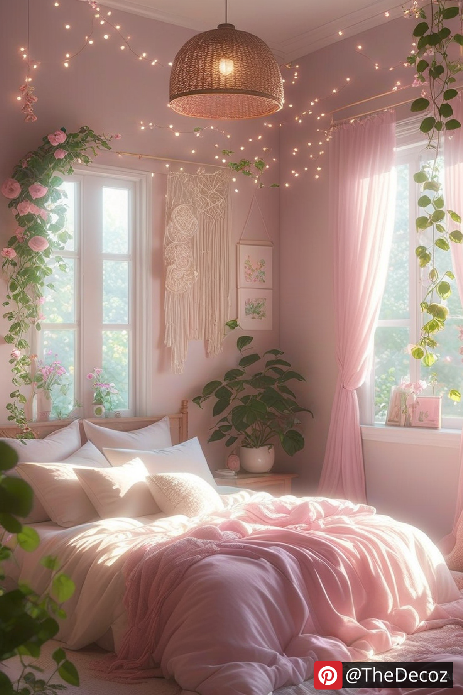

Girly Room Decor: Transform Your Space with Chic and Stylish Ideas
Creating a girly room decor aesthetic is all about incorporating elegance, charm, and personality into your space. Whether you love soft pastel tones, vibrant colors, or modern chic styles, there are endless ways to personalize your room with feminine touches. In this article, we’ll explore innovative ideas to help you achieve a stylish and cozy girly room decor that reflects your personality.
1. Choose a Color Palette
The foundation of any well-decorated room starts with the color scheme. For girly room decor, consider shades like blush pink, lavender, mint green, or soft neutrals. If you prefer a bolder look, mix in metallic accents like gold or rose gold to add a touch of glamour.
2. Elegant Furniture Choices
Opt for furniture pieces that exude sophistication while being functional. A vanity table with a chic mirror, a tufted headboard, or a stylish desk with gold accents can enhance the feminine charm of your space. White or pastel-colored furniture pieces help create a clean and dreamy ambiance.
3. Add Soft and Cozy Textiles
Incorporating soft fabrics like faux fur rugs, fluffy throw pillows, and velvet curtains can instantly make your room feel cozy and inviting. Layering different textures adds depth and warmth to the space, making it more aesthetically pleasing.
4. Statement Wall Decor
Wall decor plays a crucial role in transforming your room. Consider adding:
Floral wallpaper for a romantic touch
Framed inspirational quotes to keep you motivated
Aesthetic gallery walls featuring artwork, posters, and personal photos
LED fairy lights or neon signs to enhance the ambiance
5. Stylish Storage Solutions
Keep your room organized with stylish storage options. Decorative storage boxes, floating shelves, and elegant dressers can help maintain a tidy space without compromising on style. Clear acrylic organizers for makeup and jewelry add a touch of luxury while keeping everything easily accessible.
6. Incorporate Greenery
Adding plants or flowers can breathe life into your girly room decor. Whether it’s fresh flowers in a chic vase or low-maintenance indoor plants like succulents and pothos, greenery adds a refreshing and natural element to your space.
7. Personalized Accessories
Make your room unique with personalized touches such as:
Monogrammed bedding or cushions, Customized name signs, Handmade DIY crafts that reflect your style
8. Lighting Matters
Proper lighting can make all the difference in setting the mood. A chandelier, cute bedside lamps, or LED strip lights can create a warm and inviting atmosphere. Dim lighting options allow you to switch between bright and cozy settings as needed.
9. Girly Desk Setup
If you have a study or work area, transform it into a stylish and productive corner. A pink or white desk, gold-accented stationery, and a comfortable chair can make working or studying more enjoyable.
Final Thoughts
Achieving the perfect girly room decor is all about balancing style, comfort, and personal touches. Whether you prefer a modern chic, vintage, or princess-inspired theme, incorporating these ideas will help you create a space that feels uniquely yours. Start transforming your room today and enjoy a beautiful, feminine, and cozy retreat!
